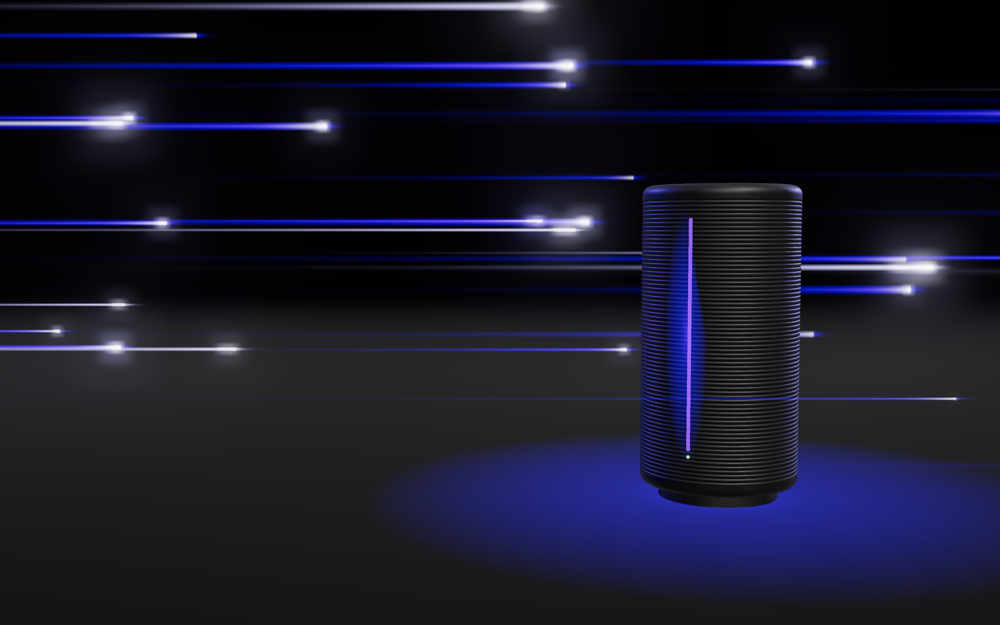
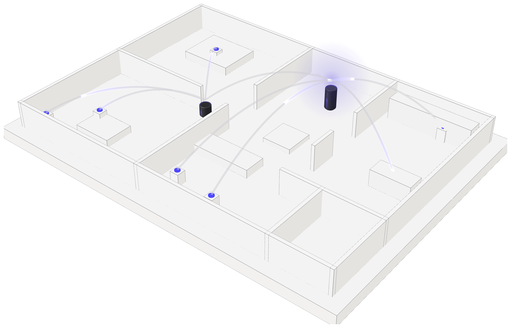
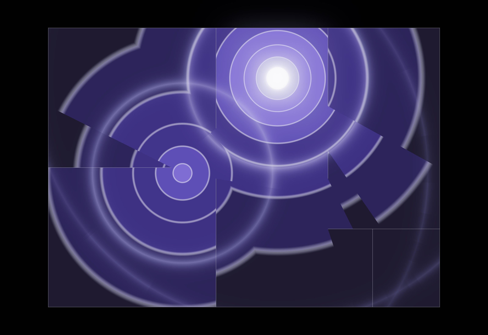
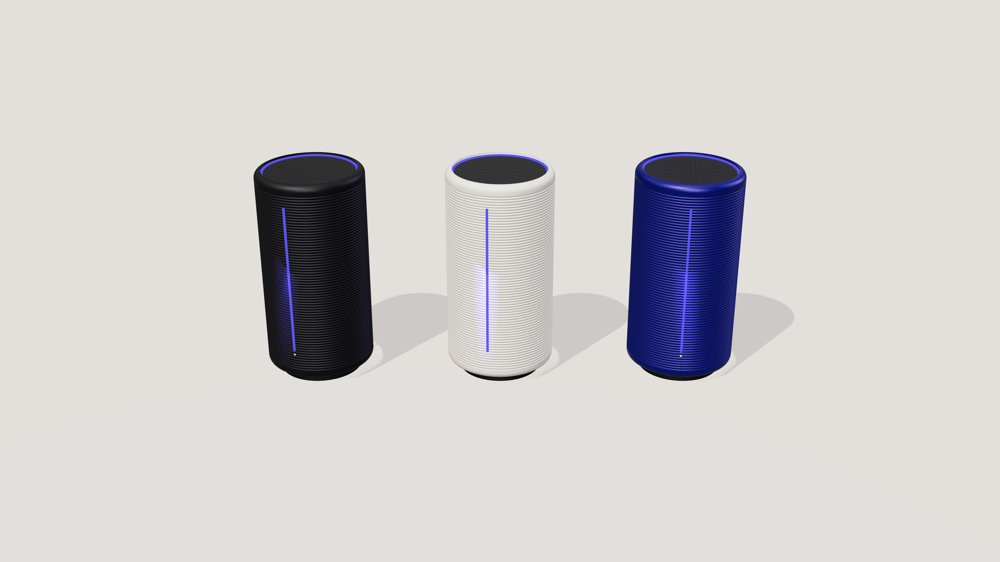
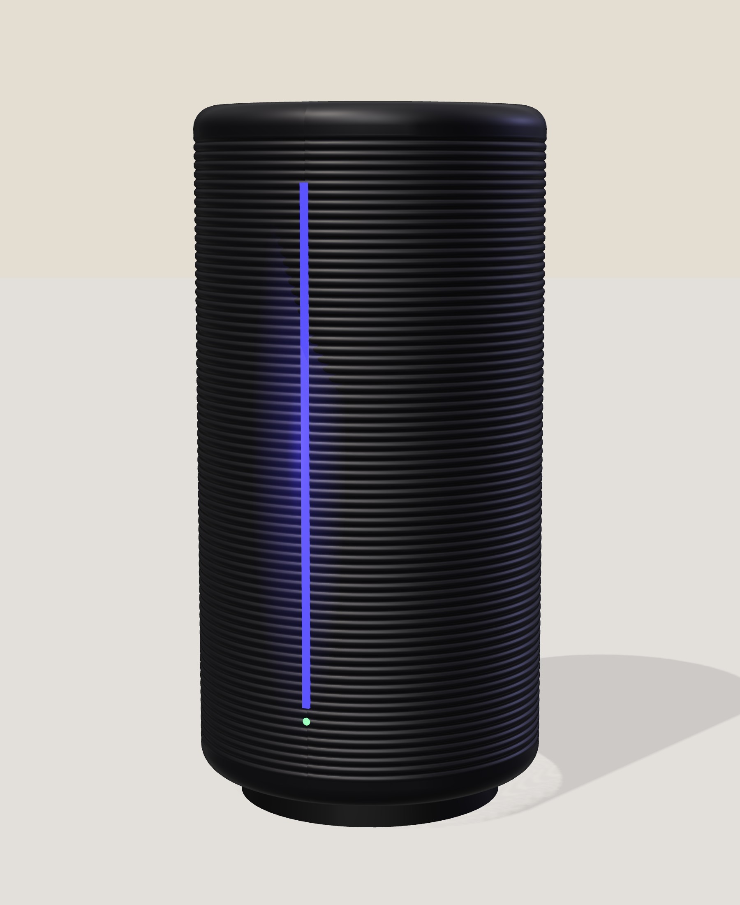
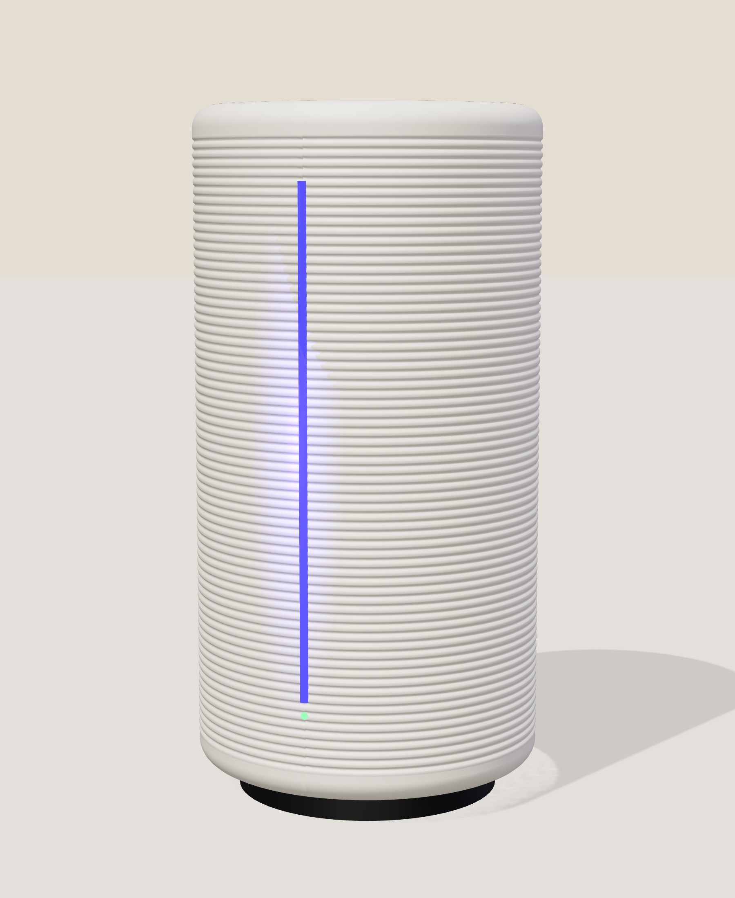
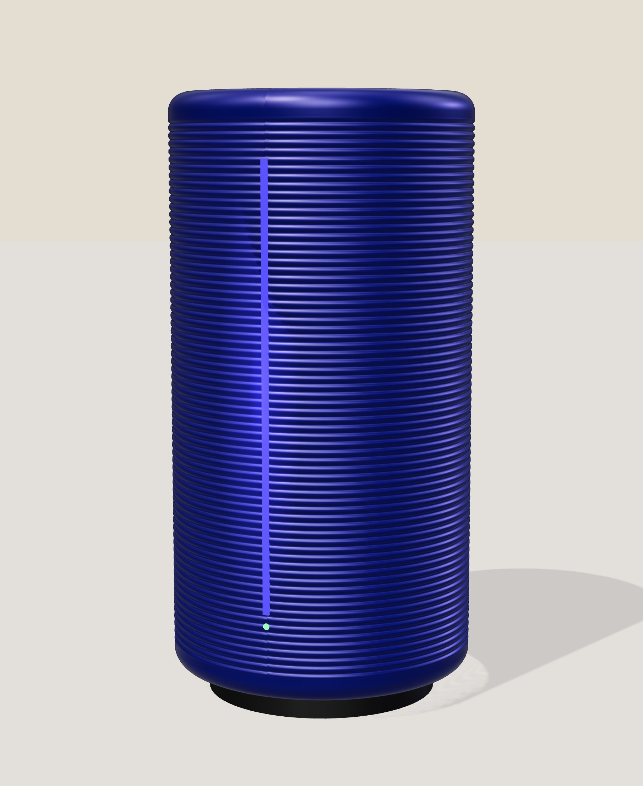
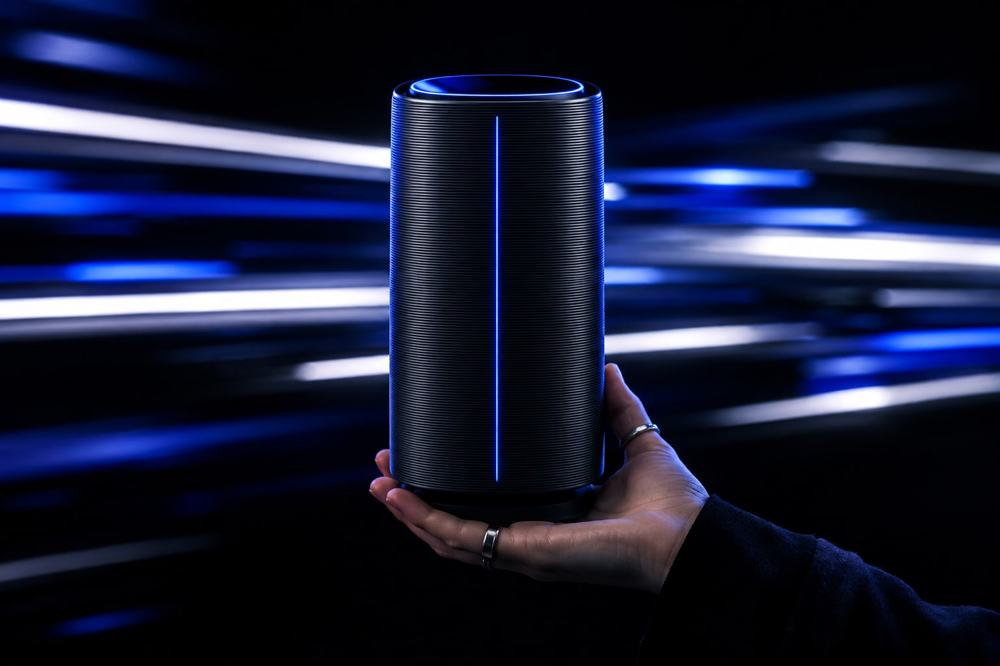
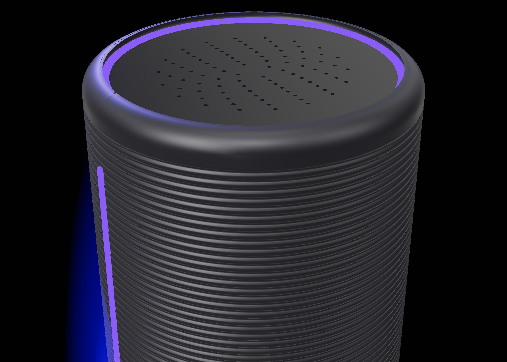
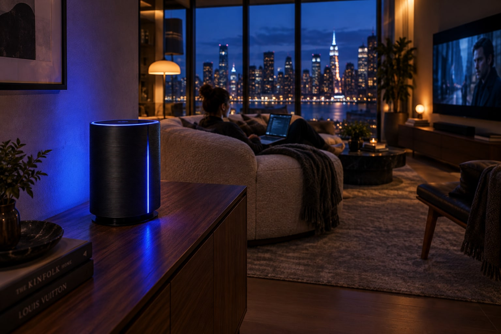

Household
Live- Median
- 3.1 ms
- Jitter
- 0.4 ms
- Devices
- 23

Wi-Fi 7 · Pre-orders open · Ships March
Vyre One reads every device, every wall and every second of your connection, then routes traffic around congestion before you feel it. Wi-Fi 7, a self-healing mesh, and one line of light you’ll want on the shelf.
3 ms2.1 Gbps6 GHz
Traffic Planner
Tell Vyre what matters — the 4K call, the ranked match, the 2 am backup — and it plans a path for each one through your home, re-routing in under a millisecond when anything changes.
Explore the planner ↗
3.1 msend to end · 14 reroutes today
Path breakdown
“We stopped noticing the internet. Honestly, that’s the highest compliment I can give a router.”
 Mei TanakaMusic producer · Surry Hills
Mei TanakaMusic producer · Surry Hills3.1 msMedian in-home latency, measured every second.
41%Fewer dropouts in the first month on Vyre.
Signal Map
A live map of coverage, room by room. Vyre measures what every wall costs and moves the mesh until the dead zones are gone. Nothing to calibrate, no app gymnastics.

Focus hours · Kids tablet
3 h 20 / 4 hGames pause at 8:30 pm. Homework sites stay on.“It found a dead zone behind our fridge that we’d blamed on the provider for three years. Fixed it by moving one little cylinder.”
Vyre One
Milled aluminium ribs that shed heat, a recessed glass top that breathes, and a single line of light that only speaks up when something needs you.
Compare finishes ↗




[ 01 ] Hardware

[ 02 ] Up close
Vyre for Work
Score every site, spot trouble before a client does, and push one policy to fifty routers at once. Built for the people who are “good with computers” and now run the network.
Explore Vyre for Work ↗93+23 since March
| Paddington Studio | 12 devices | 2 nodes | Healthy |
| Bondi Café | 31 devices | 3 nodes | Watch |
| Newtown Office | 48 devices | 4 nodes | Healthy |
| Ultimo Lab | 64 devices | 6 nodes | Healthy |
| Glebe Clinic | 22 devices | 2 nodes | Pending |
| Redfern Store | 17 devices | 1 node | Healthy |
“We run eleven sites on Vyre. I haven’t driven to a single one for a network problem since March.”

Live session · Thu 27 Nov · 7 pm AEST
Help me choose
Talk to a network specialist. Ten minutes, no sales script, and they’ll tell you if you don’t need us.
Map your home in five minutes. Walk around with your phone and see where the dead zones are today.
30 nights in your home, free returns. If it isn’t the quietest network you’ve had, send it back.